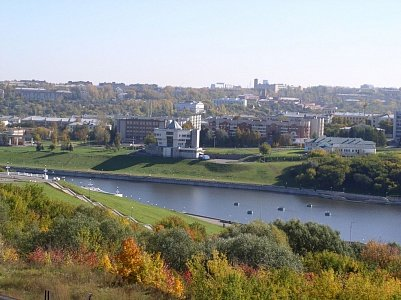
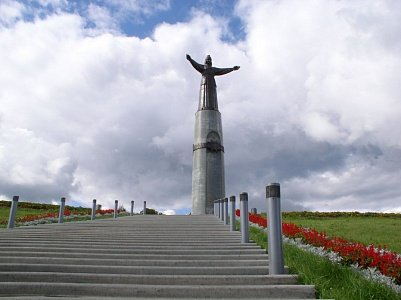
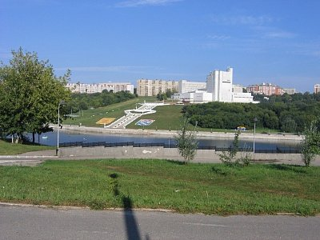
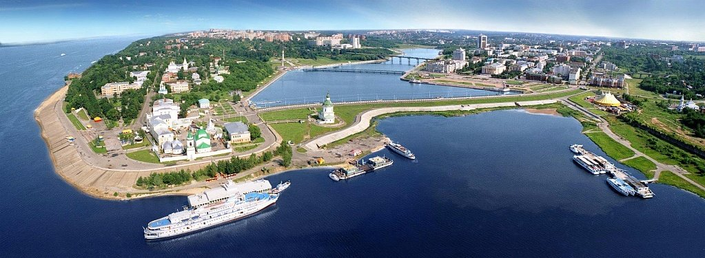

  
Чебоксары – город в европейской части России, столица Республики Чувашии. Еще в первой половине ХХ века это было тихое, провинциальное местечко, но сегодня оно превратилось в настоящий город-сад, по праву занимающий лидирующие позиции в стране по качеству окружающей среды. Необычные исторические здания, современные монументы, уникальные музейные коллекции, пляжи на берегах широкой Волги, парки и скверы привлекают в Чебоксары туристов со всей России.
Зимой в Чебоксарах холодно, но без лютых морозов, летом тепло. Несмотря на развитую промышленность, полумиллионная чувашская столица входит в тройку самых чистых и зеленых городов страны. Гостей ждут здесь круглый год, особенно в июне, когда проходит ежегодный фестиваль фейерверков на День Республики. Зрелищем можно наслаждаться на Чебоксарском заливе, в соревнованиях участвуют команды из России и ближнего зарубежья. Фейерверки, кстати, местного производства.
Археологические находки подтверждают существование поселений волжских булгар и чувашей на территории города еще в XIII-XIV вв., хотя впервые официально Чебоксары упоминаются в письменных источниках в 1469 году. При Иване Грозном город быстро разрастался как важный пункт в продвижении государства на восток. Храмы, жилые дома, административные здания – все было деревянным, и это сослужило Чебоксарам плохую службу. В 70-е гг. XVIII века город пережил грандиозный пожар, после которого долго не мог оправиться. В довершение всех несчастий Волга утратила свое торговое значение после получения выхода к Балтике, и развитие Чебоксар приостановилось.
Перемены в жизнь города пришли при советской власти, когда Чебоксары были объявлены столицей Чувашской АССР, а во время войны сюда эвакуировали промышленные предприятия. В мирное время город активно застраивался по генеральному плану, сохранившему обширные зеленые зоны. После Перестройки в чувашской столице восстановили самые интересные исторические здания, а занятые под светские нужды религиозные постройки были возвращены Церкви.
